Lab_Stock
이렇게 써요
무엇이 얼마나 남았는지, 누가 언제 썼는지. 우리 학교 과학실의 시약과 센서를 학교별로 따로 기록해요. 맡은 역할에 맞는 부분만 골라 읽으세요.
처음 들어가기
개인 이메일로 가입하면서 우리 학교를 골라요. 학교는 계정에 묶여서, 그다음부터는 우리 학교 데이터만 보여요.
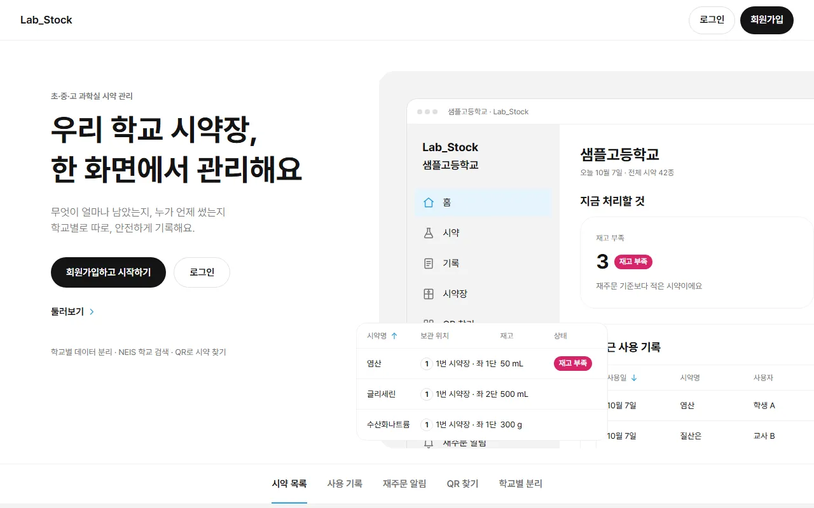
회원가입
- 첫 화면에서 회원가입하고 시작하기를 눌러요.
- 학교 선택: 시/도 → 지역(시/군/구) → 학교급(초등학교 · 중학교 · 고등학교) → 학교 순서로 골라요. 목록은 NEIS(나이스) 공식 학교 정보예요.
- 계정: 이름 · 개인 이메일 · 비밀번호(8자 이상) · 비밀번호 확인을 적고, 서비스 이용약관 · 개인정보 수집·이용 · 만 14세 이상 확인(모두 필수)에 동의해요. 만 14세 미만은 가입할 수 없어요.
- 가입하기를 누르면 확인 메일이 가요. 메일의 링크로 확인한 뒤 개인 이메일과 비밀번호로 로그인해요. 메일이 안 보이면 스팸함을 보세요.
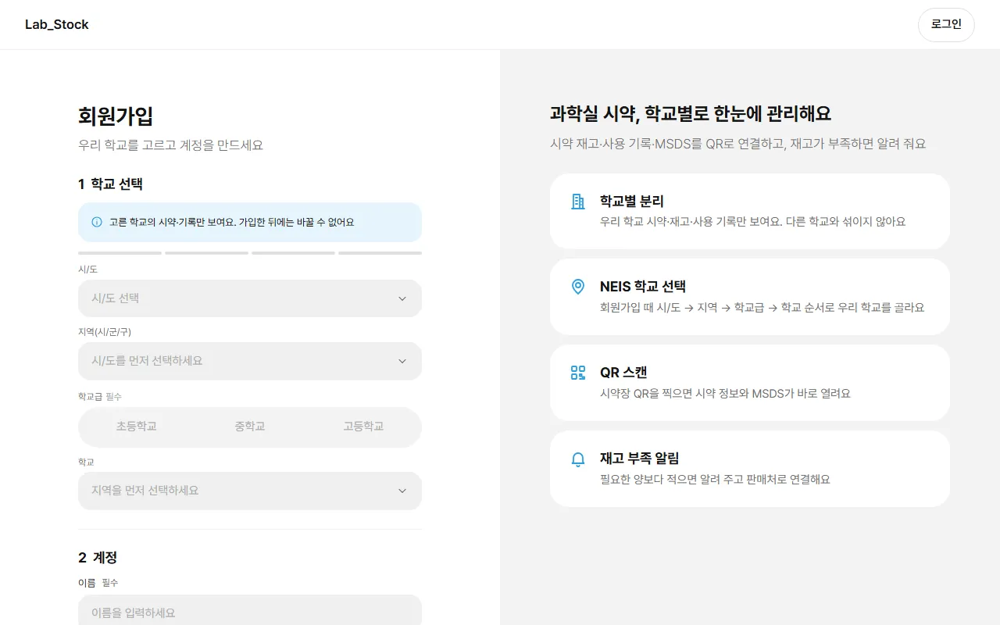
역할은 어떻게 정해져요?
- 그 학교에서 처음 가입한 사람이 관리자(admin)가 돼요.
- 그다음 가입자는 학생으로 시작해요.
- 관리자가 미리 초대해 둔 이메일로 가입하면 초대한 역할(학생 · 교사)이 붙어요.
- 역할은 관리자가 사용자 화면에서 바꿀 수 있어요.
초대 받기 · 보내기
- 초대는 메일을 보내지 않아요. 관리자가 이메일과 역할을 적어 두는 것이에요.
- 관리자가 초대 링크 복사로 회원가입 주소를 메신저 등으로 직접 전해요.
- 받은 사람은 초대받은 그 이메일로, 같은 학교를 골라 가입하면 돼요.
비밀번호를 잊었을 때
로그인 화면의 비밀번호 찾기에서 이메일을 적으면 재설정 메일이 가요.
가입 전에 둘러보기
첫 화면의 둘러보기는 가짜 데이터가 든 데모 학교를 보여 줘요. 홈 · 시약 · 센서를 볼 수 있고, 저장 · 기록 · QR은 잠겨 있어요.
화면 둘러보기
컴퓨터에서는 왼쪽 사이드바, 휴대폰에서는 아래 탭으로 다녀요. 역할에 따라 보이는 메뉴가 달라요.
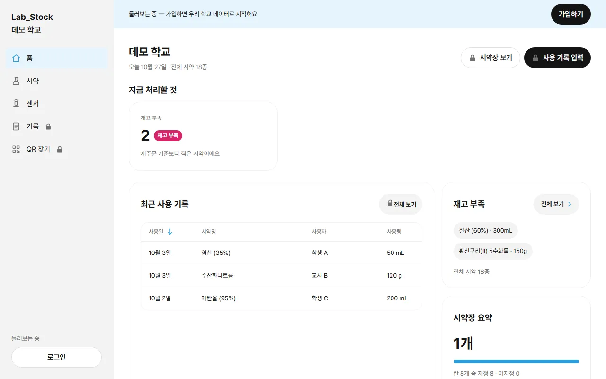
컴퓨터 — 왼쪽 사이드바
| 묶음 | 메뉴 | 보이는 사람 |
|---|---|---|
| (맨 위) | 홈 · 시약 · 센서 · 기록 · 시약장 · QR 찾기 | 모두 |
| 관리 | 입고 · 실험 매뉴얼 · 재주문 알림 | 교사 · 관리자 |
| 학교 설정 | 사용자 · 판매처 | 관리자 |
사이드바 맨 아래 계정 ▾를 누르면 로그아웃이 있어요.
휴대폰 — 아래 탭 4개
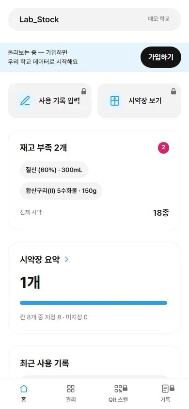
탭
- 홈 — 오늘의 요약.
- 관리 — 메뉴 모음이에요. 재고(시약 · 센서 · 시약장), 입고·주문(입고 · 실험 매뉴얼 · 재주문 알림, 교사 · 관리자), 학교(사용자 · 판매처, 관리자). 줄마다 "시약 18종 · 재고 부족 2" 같은 요약이 붙어요.
- QR 스캔 — 시약장 QR을 찍어요.
- 기록 — 사용 기록 내역.
로그아웃
화면 위 학교 이름 옆 ▾를 누르면 로그아웃이 있어요.
홈의 빠른 실행
| 역할 | 홈 위 버튼 |
|---|---|
| 학생 | 시약장 보기 · 사용 기록 입력 |
| 교사 | 사용 기록 입력 · 시약장 설정 · 입고 |
| 관리자 | 사용자 관리 · 시약장 설정 · 입고 |
지금 처리할 것에는 재고 부족 수가 나오고, 교사 · 관리자에게는 재주문 알림 · MSDS 없는 시약도 나와요. 고장이나 점검이 필요한 센서가 있으면 센서 알림도 보여요.
시약 찾기 · 사용 기록 모든 역할
시약을 찾아 상세와 MSDS를 보고, 쓴 만큼 기록하면 재고가 바로 줄어요.
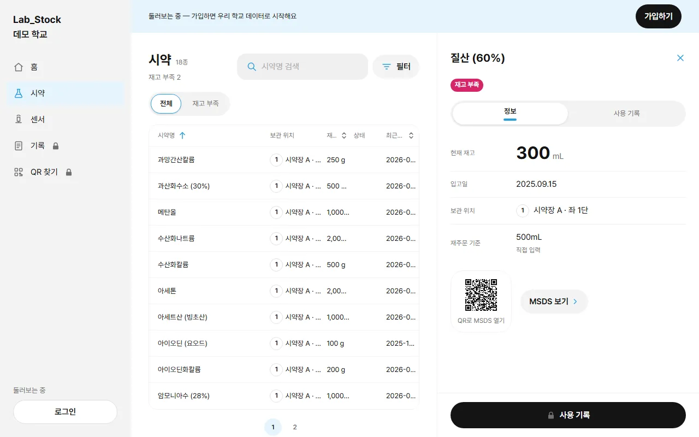
찾기
- 이름으로 검색하고 전체 재고 부족으로 나눠 봐요.
- 필터: 정렬(이름순 · 재고 적은 순 · 최근 입고순), 보관 분류, 보관 위치(시약장 → 칸, "칸 없음만"), "MSDS 없는 시약만".
- 적용한 조건은 칩으로 보이고 × 로 하나씩 지워요. 주소에 남아서 새로고침해도 그대로예요.
MSDS 보기
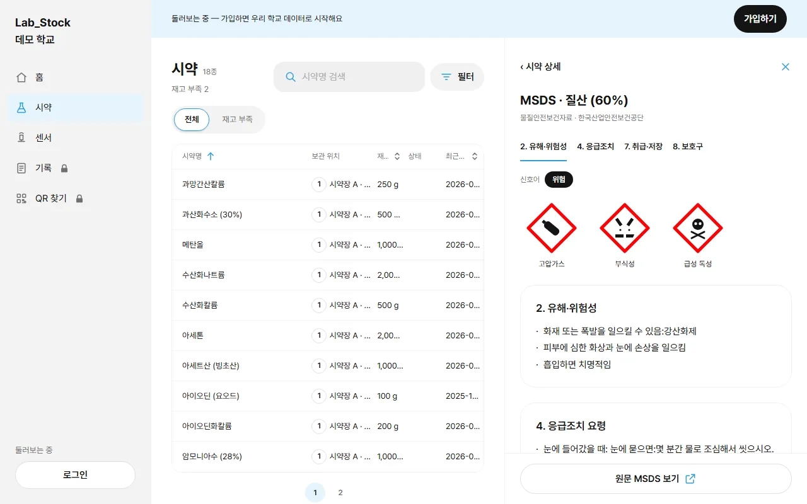
- 상세의 MSDS 보기를 누르면 한국산업안전보건공단 MSDS를 앱 안에서 요약해 보여 줘요: 신호어("위험" · "경고"), GHS 그림문자, 2. 유해·위험성 · 4. 응급조치 요령 · 7. 취급 및 저장방법 · 8. 노출방지 및 개인보호구.
- 맨 아래 원문 MSDS 보기로 공단 원문을 새 창에서 열어요. 공단 주소가 아닌 MSDS는 요약 없이 원문 보기만 나와요.
- 상세의 QR로 MSDS 열기 타일을 휴대폰 카메라로 찍으면 MSDS 원문이 바로 열려요.
MSDS 찾기 교사 · 관리자
- MSDS가 없는 시약 상세에 MSDS 찾기가 있어요. 안전보건공단 목록에서 후보(물질명 · CAS)를 보여 주고, 하나 고르면 저장돼요.
- "염산"처럼 공단에 다른 이름(염화수소)으로 올라 있는 시약도 학교에서 흔히 쓰는 이름 · CAS 번호로 찾아봐요. 그래도 없으면 AI가 공단식 이름을 추측해 다시 찾아요. 후보는 언제나 공단이 실제로 돌려준 것만 보여요.
- 목록 필터에서 "MSDS 없는 시약만"을 켜면 "MSDS 없는 시약 N종 — 한 번에 찾기" 띠가 떠요. 시약마다 차례로 고르거나 건너뛰어요(한 번에 20종까지).
사용 기록 입력
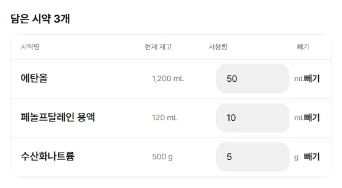
- 홈의 사용 기록 입력, 시약 상세의 사용 기록(그 시약이 담긴 채), 또는 기록 화면의 기록 추가로 들어가요.
- 시약을 검색해 담아요. 한 번에 30개까지 담을 수 있어요.
- 시약마다 사용량을 적어요. 지금 재고보다 많이 적으면 경고가 뜨고 저장이 안 돼요.
- 사용일(기본 오늘, 앞날은 안 돼요), 수업(학년 · 반 · 수업명, 선택 — 최근에 쓴 조합 3개가 칩으로 나와요), 메모(선택, 200자)를 정해요.
- 사용 기록 저장 · N개를 누르면 재고가 바로 줄고 들어온 화면으로 돌아가요.
기록 화면
- 사용일별로 묶여 최신순으로 보여요. 행: 시약명 · 사용자 · 기록 시각 · 사용량 · 수업.
- 전체 내 기록, 기간(최근 1개월 · 3개월 · 6개월 · 전체), 시약명 검색, 반 필터로 좁혀요.
- 행을 누르면 상세: 사용자 · 사용일 · 기록한 날 · 메모 · MSDS 보기.
- 지난 날짜로 기록하면 "10월 6일에 기록"처럼 기록한 날이 함께 보여요.
- 이름은 같은 학교 사용자끼리만 보여요. 학교에서 내보낸 사용자는 "삭제된 사용자"로 보여요.
시약 삭제 교사 · 관리자
- 하나: 시약 상세의 ⋯ → 시약 삭제 → 확인.
- 여러 개: 목록의 선택 → 행을 눌러 체크 → N개 선택됨 · 삭제. 전체 선택은 지금 검색 · 필터 결과 중 100개까지예요.
- 삭제한 시약은 목록 · 시약장 · 홈 · 재주문 알림에서 빠지지만, 사용 · 입고 기록은 남고 기록 화면에 "삭제된 시약"으로 보여요. 되돌릴 수는 없어요.
입고 교사 · 관리자
거래명세서 한 장으로 여러 품목을 한 번에 넣거나, 한 종씩 직접 넣어요. 입고 화면 맨 위에서 서류로 입고 | 직접 입력을 골라요(처음은 서류로 입고).
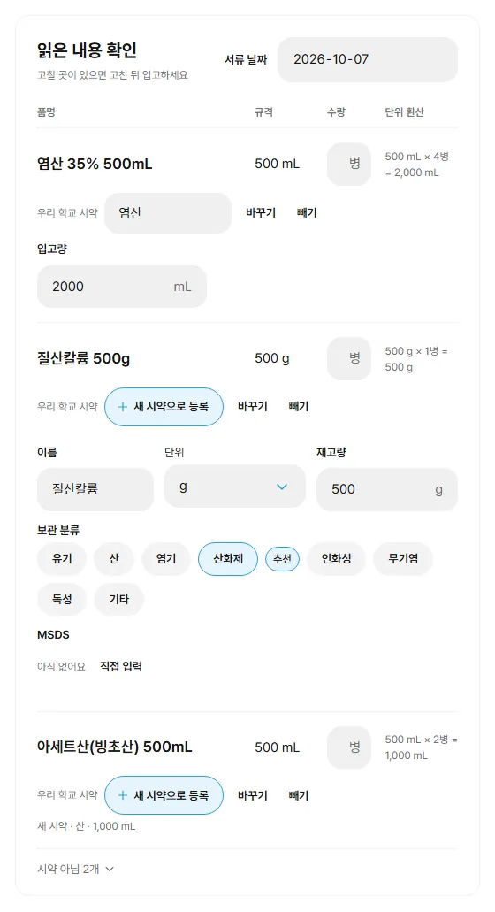
서류로 입고
- 품의서 · 영수증 · 거래명세서를 올려요. PDF · JPG · PNG, 4MB까지. 휴대폰은 바로 촬영해도 돼요.
- AI로 읽기를 누르면 품목(품명 · 규격 · 수량)을 읽어 표로 보여 줘요.
- 품목마다 우리 학교 시약이 자동으로 연결돼요. 바꾸기 · 빼기 · 새 시약으로 등록으로 고쳐요.
- 입고량은 규격 × 수량으로 계산돼요(예: 500 mL × 4병 = 2,000 mL). 계산이 안 되면 직접 적어요. 언제든 고칠 수 있어요.
- 서류 날짜가 입고일이 돼요(없으면 오늘, 앞날은 안 돼요).
- 확인 후 입고를 누르면 한 번에 저장돼요. 하나라도 틀리면 아무것도 저장되지 않아요.
새 시약 행
이름(기본 = 서류의 품명) · 보관 분류(AI가 고른 분류에 "추천") · 단위(병 · mL · g) · 재고량 · MSDS(찾기 또는 주소 직접 입력)를 정해요.
시약 아닌 품목
장갑 · 비커처럼 시약이 아닌 품목은 표 아래 시약 아님 N개로 접혀 있어요. 펼쳐서 "시약으로 넣기"로 표에 올릴 수 있어요.
영어 서류
영어로 된 서류도 시약명을 한국어로 바꿔 보여 주고, 아래에 "원문: …"을 함께 적어 줘요.
AI는 읽기만
올린 파일은 읽는 데만 쓰고 서버에 남기지 않아요. 선생님이 확인하고 누르기 전에는 아무것도 저장되지 않아요.
직접 입력
기존 시약 입고
시약을 고르고 들어온 양과 입고일(앞날은 안 돼요)을 적어요. 재고가 늘고 입고 기록이 남아요. 최근 입고일은 더 늦은 날짜로만 바뀌어요.
새 시약 등록
이름 · 종류(보관 분류) · 재고량 · 단위(병 · mL · g) · 입고일 · MSDS. MSDS 칸 옆 MSDS 찾기로 공단 주소를 채울 수 있어요.
| 보관 분류 8종 |
|---|
| 유기 · 산 · 염기 · 산화제 · 인화성 · 무기염 · 독성 · 기타 |
시약장 · QR
실제 시약장처럼 칸을 그려 두고, 칸마다 보관 분류를 정해요. 시약장 문에 QR 라벨을 붙이면 찍기만 해도 그 장의 시약이 보여요.
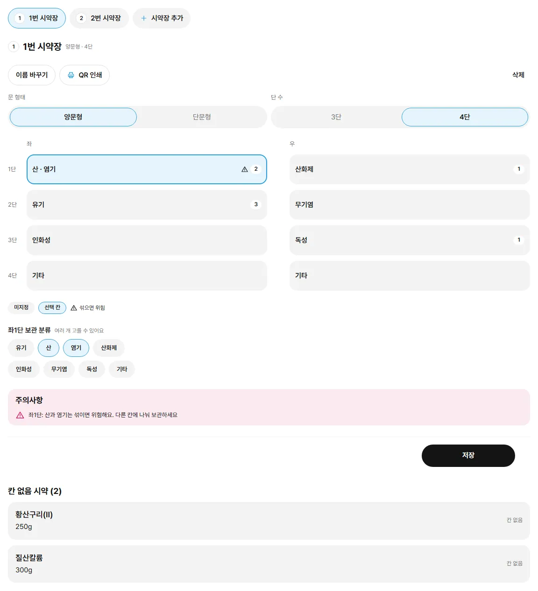
시약장 만들기 교사 · 관리자
- + 시약장 추가: "{번호}번 시약장"이 생겨요(양문형 · 4단). 학교당 20개까지.
- 시약장마다 고정 번호가 있어요. 지운 번호는 다시 쓰지 않아 QR 라벨과 헷갈리지 않아요.
- 문 형태(양문형 · 단문형), 단 수(3단 · 4단)를 고르고, 칸을 눌러 보관 분류를 정해요. 한 칸에 여러 분류도 돼요.
- 저장을 눌러야 반영돼요. 저장하지 않고 다른 시약장으로 가면 확인 창이 떠요.
- 이름 바꾸기(1~20자) · 삭제(넣어 둔 시약은 지워지지 않고 "칸 없음"이 돼요).
시약 넣기 · 옮기기 교사 · 관리자
- 시약장에서 칸을 누르면 그 칸의 시약 목록이 열려요. 시약 넣기로 칸 없음 시약을 넣고, 빼기도 해요. 이 칸이 추천 칸인 시약에는 "추천"이 붙어요.
- 시약 상세의 보관 위치 줄에서 위치 바꾸기 → 시약장 · 칸 고르기. 추천 칸이 처음 골라져 있어요.
- 칸 분류와 시약 분류가 안 맞거나 섞으면 위험한 조합이면 경고만 하고 막지는 않아요.
- 단 수를 줄이거나 단문형으로 바꿔 사라지는 칸의 시약은 "칸 없음"이 돼요. 저장 전에 몇 종인지 알려 줘요.
QR 인쇄 · 찾기
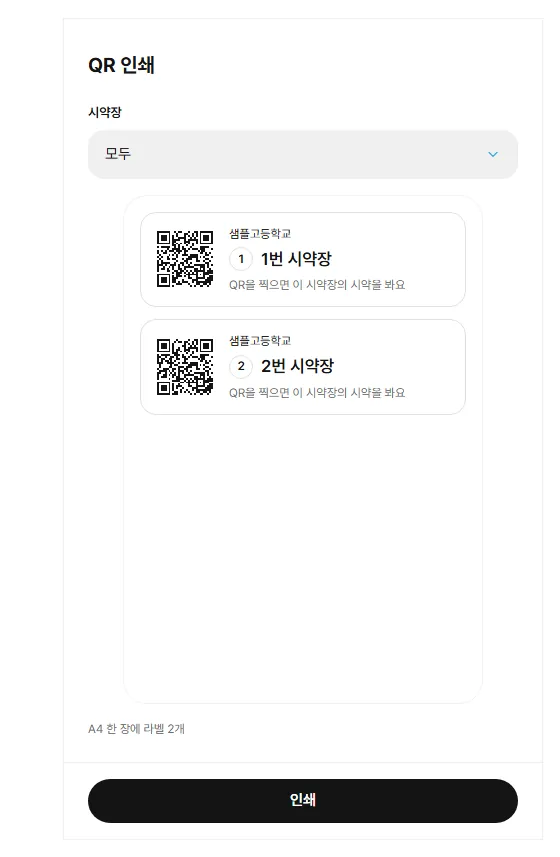
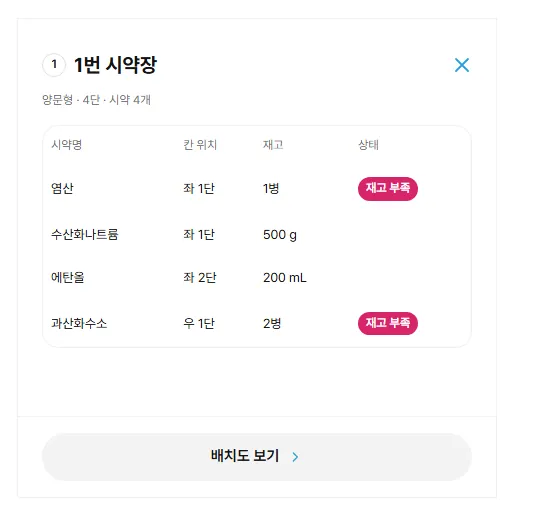
QR 인쇄 교사 · 관리자
- 시약장 화면의 QR 인쇄를 눌러요.
- 시약장을 골라요(기본 = 지금 시약장, "모두"도 돼요). 미리보기를 확인해요.
- 인쇄 → 브라우저 인쇄로 A4에 뽑아 시약장 문에 붙여요. 라벨에는 학교명 · 시약장 번호 · 이름이 적혀요.
QR로 찾기 모든 역할
- 휴대폰 QR 스캔 탭(컴퓨터는 사이드바 QR 찾기)에서 카메라로 라벨을 찍어요. 어두우면 플래시.
- 카메라를 쓸 수 없으면 번호로 찾기에 시약장 번호(예: 1)를 적어요.
- 결과에서 시약을 누르면 시약 상세, 배치도 보기는 시약장 화면으로 가요.
- 휴대폰 기본 카메라로 찍어도 열려요. 로그인 전이면 로그인 뒤 그 시약장으로 바로 가요.
- 다른 학교 시약장 QR을 찍으면 우리 학교 시약장 QR이 아니라는 안내가 떠요.
재주문 알림 · 판매처 교사 · 관리자
재고가 재주문 기준보다 적어지면 알림에 올라와요. 알림에서 판매처 사이트로 바로 이어져요.
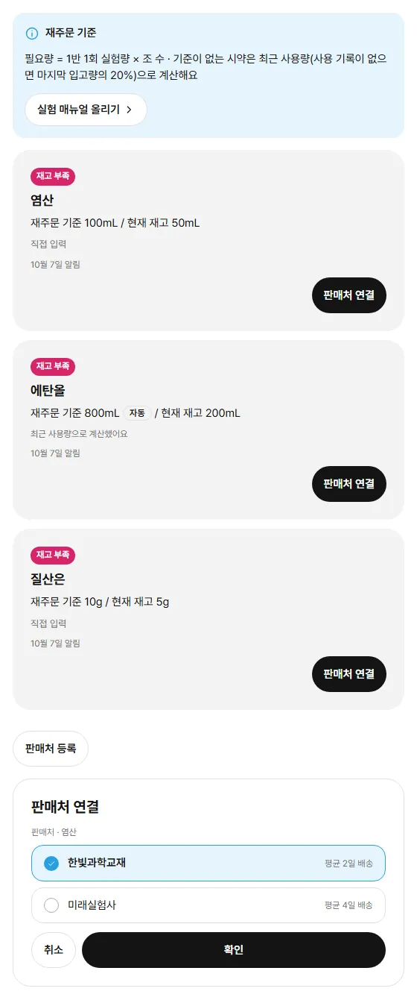
알림 카드
- 재고 부족 시약명 · "재주문 기준 100mL / 현재 재고 50mL" · 기준의 근거 · 알림 날짜(기준 아래로 내려간 날).
- 부족한 정도가 큰 시약이 위에 와요.
- 재고가 다시 기준 이상이 되면 알림에서 빠져요.
재주문 기준 정하기
- 자동 자동 — 기준을 따로 정하지 않으면 최근 4주 사용량으로 2주치를 계산해요. 사용 기록이 없으면 마지막 입고량의 20%예요. 사용 · 입고를 기록할 때 다시 계산돼요.
- 실험 매뉴얼 — 1반 1회 실험량 × 조 수. 실험 매뉴얼에서 채워요.
- 직접 입력 — 시약 상세의 재주문 기준 줄에서 숫자를 적어요. 0이면 알림이 없어요.
- 매뉴얼 · 직접 입력 값이 있으면 자동보다 먼저예요. 상세의 자동으로 돌리기로 자동으로 되돌려요.
판매처 연결
- 카드의 판매처 연결을 눌러요.
- 판매처를 고르고 확인을 누르면 그 사이트가 새 창으로 열려요. 공통 목록 판매처는 시약 이름으로 검색한 결과가 바로 열려요.
- 주문은 그 사이트에서 해요. Lab_Stock은 아무것도 저장하지 않아요.
판매처 옆 별표로 학교 즐겨찾기를 정해요(학교 안에서 함께 봐요). 즐겨찾기가 있으면 즐겨찾기만 먼저 보이고, 모든 판매처 보기로 펼쳐요.
판매처 설정 관리자
- 우리 학교 판매처: 판매처 등록 → 판매처명(필수) · 연락처 · 웹사이트 주소. 행의 더보기에서 수정 · 삭제.
- 공통 목록: 모든 학교가 함께 쓰는 과학 쇼핑몰 목록이에요(보기만). 11번가 · G마켓 · 오피스안 · 퍼스트과학 · 과학생각 · 사이언스툴 · 컴사이언스 · 양원과학 · 과학랩 · 덕산종합과학 · 생물나라.
- 웹사이트가 없는 판매처를 고르면 확인 대신 연락처를 안내해요.
실험 매뉴얼 교사 · 관리자
실험 매뉴얼을 올리면 AI가 시약별 1조 사용량을 찾아요. 조 수를 곱해 재주문 기준으로 저장해요.
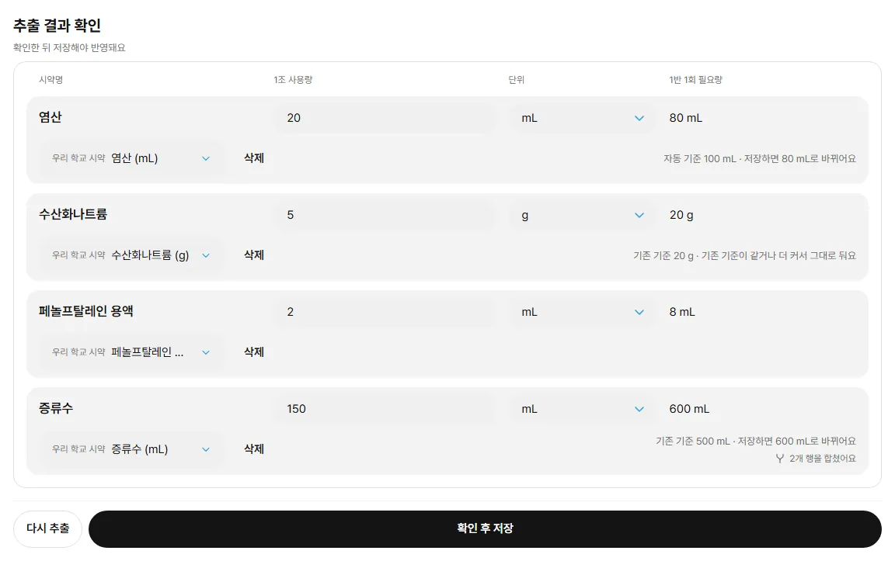
- 사이드바 실험 매뉴얼(휴대폰은 관리 탭) 또는 재주문 알림의 실험 매뉴얼 올리기로 들어가요.
- 매뉴얼 파일 1개(PDF · JPG · PNG, 4MB까지)와 조 수(1~20)를 넣고 AI 추출.
- 표에서 확인해요: 시약명 · 1조 사용량 · 단위(병 · mL · g) · 1반 1회 필요량(= 1조 사용량 × 조 수). 고친 칸은 하늘색으로 표시돼요. 틀린 행은 삭제.
- 행마다 우리 학교 시약이 자동 연결돼요. 연결되지 않은 행("등록되지 않은 시약")은 저장에서 빠져요.
- 확인 후 저장 → 재주문 기준이 저장되고 재주문 알림으로 가요. 같은 파일로 다시 추출도 돼요.
더 큰 값만
이미 기준이 있는 시약은 새 필요량이 더 클 때만 바뀌어요. 표에 "기존 기준 N · 그대로 둬요 / 바뀌어요"로 미리 보여 줘요. 자동 기준이던 시약은 새 값으로 바뀌어요.
중복 합치기
같은 시약이 여러 줄로 나오면 한 줄로 합쳐 사용량을 더하고 "N개 행을 합쳤어요"라고 알려 줘요.
파일은 남기지 않아요
매뉴얼 파일은 추출하는 동안만 쓰고 버려요. 영어 매뉴얼도 한국어 시약명으로 보여 줘요.
센서
학교가 가진 무선 센서의 종류 · 수량 · 위치 · 상태를 관리해요. 측정값이나 대여는 다루지 않아요.
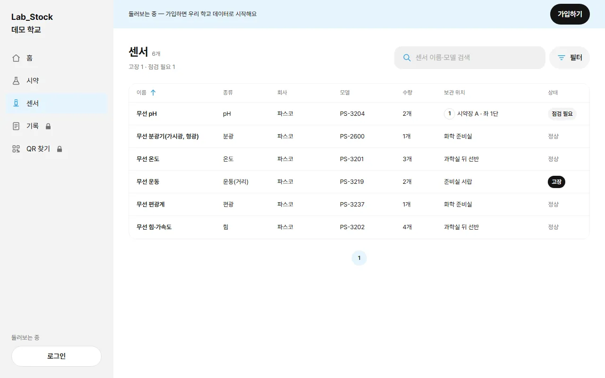
보기 모든 역할
- 컴퓨터는 사이드바 센서, 휴대폰은 관리 탭 → 센서.
- 이름 · 모델로 검색하고, 필터로 종류 · 회사 · 상태를 골라요.
- 종류는 27가지가 물리 · 화학 · 생명·지구 · 장비 네 묶음으로 나뉘어 있어요.
- 상태: 정상 · 점검 필요 · 고장. 고장 · 점검 필요가 있으면 교사 · 관리자 홈에 알림이 떠요.
등록 교사 · 관리자
- 직접 입력: 이름 · 종류 · 회사 · 모델 · 수량 · 보관 위치(직접 적기 또는 시약장 칸) · 상태 · 메모.
- 회사를 파스코로 고르면 모델 칸에서 모델번호나 한국어 이름으로 찾을 수 있어요(예: PS-3215). 고르면 종류 · 이름이 채워져요.
- 서류로 등록: 거래명세서를 올리면 AI가 품목을 읽어요. 같은 회사 · 모델 센서가 이미 있으면 "기존 센서에 더하기 · 지금 3개 → 5개", 없으면 새 센서로 등록해요.
- 여러 개 삭제: 목록의 선택.
관리 관리자
관리자는 학교 사람과 판매처를 관리하고, 필요할 때 시약 · 기록을 한꺼번에 지워요.
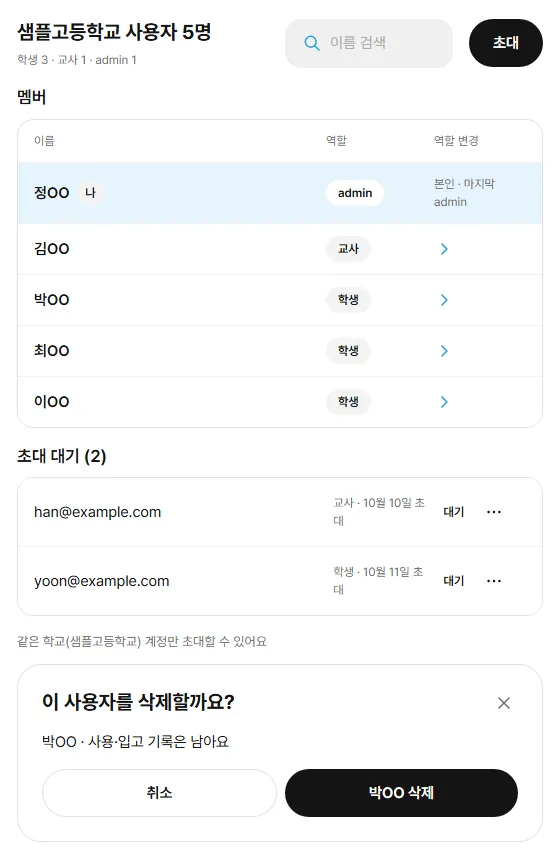
사용자
- 머리에 "학생 a · 교사 b · admin c". 이름으로 검색해요. 다른 사람의 이메일은 보이지 않아요.
- 역할 바꾸기: 행을 눌러 학생 · 교사 · admin 중에서 골라요. 학교에 admin이 최소 1명은 있어야 해서, 마지막 admin은 바꿀 수 없어요.
- 삭제 = 학교에서 내보내기. 그 사람의 사용 · 입고 기록은 남고 이름은 "삭제된 사용자"로 보여요. 본인과 마지막 admin은 내보낼 수 없어요.
- 내보낸 사람은 로그인하면 "소속 학교가 없어요" 안내만 보여요. 같은 이메일로 다시 가입하면 돌아올 수 있어요.
초대
- 초대 → 이메일(여러 명 가능) + 역할(학생 · 교사) → N명 초대.
- 메일은 가지 않아요. 초대 링크 복사로 가입 주소를 직접 전해요.
- 초대 대기 목록의 ⋯ → 초대 취소. 취소한 뒤 그 이메일로 가입하면 학생으로 시작해요.
한꺼번에 지우기
시약 전체 삭제
- 시약 화면 머리 오른쪽 ⋯ → 시약 전체 삭제.
- 확인 칸에 우리 학교 이름을 똑같이 적어야 전체 삭제가 켜져요.
- 우리 학교 시약이 모두 삭제돼요. 사용 · 입고 기록은 남아요.
기록 삭제
- 기록 화면 머리 오른쪽 ⋯ → 기록 삭제.
- 전체 | 이 날짜 이전을 골라요(그날은 빼고 그 전까지).
- "사용 기록 N건 · 입고 기록 M건을 지워요" 미리보기를 확인하고 학교 이름을 적은 뒤 삭제해요.
- 지금 재고 수량은 그대로예요. 수업 정보도 함께 지워져요.
판매처 관리는 재주문 알림 · 판매처를 보세요.
학생 화면
학생에게 안내할 때 보세요. 학생은 보기와 사용 기록 입력을 해요.
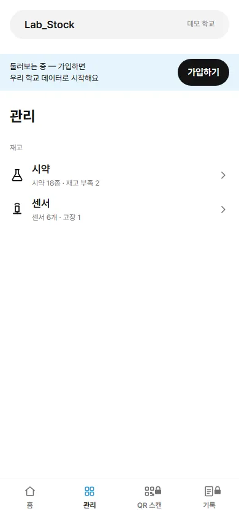
학생이 하는 것
- 시약 찾기 · 상세 · MSDS 보기
- 사용 기록 입력 (여러 시약 · 사용일 · 수업 · 메모)
- 기록 보기 — 내 기록으로 내 것만
- 시약장 배치도 · 칸의 시약 보기
- QR 스캔으로 시약장 찾기
- 센서 목록 보기
학생에게 없는 것
입고 · 시약과 센서 등록 · 삭제 · 칸 배치 · 재주문 기준 · 재주문 알림 · 판매처 · 실험 매뉴얼 · 사용자 관리. 이런 버튼은 학생 화면에 보이지 않아요.
개인정보 · AI 원칙
Lab_Stock이 모으는 정보와 맡기는 곳, AI를 쓰는 방식이에요.
모으는 정보
| 항목 | 내용 |
|---|---|
| 수집 항목 | 이름 · 개인 이메일 · 비밀번호(암호화해 저장) · 학교 · 역할, 접속 기록 |
| 쓰는 곳 | 계정 확인, 학교 안에서 사용 기록에 이름 표시 |
| 보유 기간 | 탈퇴할 때까지 |
| 동의 거부 | 동의하지 않을 수 있지만, 동의하지 않으면 가입할 수 없어요 |
| 만 14세 미만 | 보호자 동의 절차가 없어 가입할 수 없어요 (가입할 때 만 14세 이상인지 확인해요) |
처리를 맡기는 곳
| 업체 | 맡기는 일 | 위치 |
|---|---|---|
| Supabase | 데이터 저장 · 로그인 | 서울 |
| Vercel | 앱 호스팅(화면 · 서버 실행) | 서울 |
| Google Gemini | AI 서류 읽기(입고 서류 · 실험 매뉴얼 · 센서 서류). 파일은 읽는 데만 쓰고 저장하지 않아요 | 국외 처리 |
지키는 원칙
학교별로 따로
모든 시약 · 재고 · 기록은 학교별로 나뉘어 있고, 다른 학교 데이터는 데이터베이스에서부터 보이지 않아요. 이름도 같은 학교 사람에게만 보여요.
AI는 초안, 저장은 선생님이
AI가 읽은 결과는 늘 확인 표로 먼저 보여 줘요. 선생님이 고치고 확인 후 저장 · 입고를 눌러야 반영돼요. 서류 안에 적힌 지시문은 따르지 않아요.
파일은 남기지 않아요
AI에 보내는 서류 · 매뉴얼 파일은 읽는 동안만 쓰고 서버에 보관하지 않아요. 원본은 선생님 컴퓨터에 두세요.
연결 정보는 서버에만
나이스 · AI · MSDS 같은 외부 서비스 연결 정보는 서버에서만 다루고 화면에 두지 않아요. QR 카메라 영상도 서버로 보내지 않아요.
자주 묻는 질문
학교를 잘못 골라 가입했어요.
가입한 뒤에는 화면에서 학교를 바꿀 수 없어요. 그 학교 관리자가 사용자 화면에서 내보내면, 같은 이메일로 회원가입을 다시 하면서 학교를 고를 수 있어요.
선생님인데 학생으로 가입됐어요.
처음 가입자 다음부터는 학생으로 시작해요. 관리자에게 사용자 화면에서 역할을 교사로 바꿔 달라고 하세요. 앞으로는 관리자가 미리 교사로 초대해 두면 가입하자마자 교사예요.
초대 메일이 안 와요.
초대는 메일을 보내지 않아요. 관리자가 "초대 링크 복사"로 받은 가입 주소를 직접 전해 주면, 초대받은 이메일로 같은 학교를 골라 가입하세요.
가입 확인 메일이 안 와요.
스팸함을 먼저 보세요. 확인을 마친 뒤 개인 이메일과 비밀번호로 로그인하면 돼요.
관리자를 다른 선생님께 넘기고 싶어요.
사용자 화면에서 그 선생님의 역할을 admin으로 바꾸세요. 그다음 새 admin이 내 역할을 바꾸거나 나를 학교에서 내보내면 돼요. 학교에는 admin이 최소 1명 있어야 해서 마지막 admin은 바꾸거나 내보낼 수 없고, 자기 자신은 내보낼 수 없어요.
재고 부족 알림이 안 떠요.
재주문 기준이 0이면 알림이 없어요. 시약 상세에서 기준을 직접 적거나, 실험 매뉴얼로 채우거나, 사용 · 입고 기록이 쌓이면 자동 기준이 계산돼요.
자동 기준이 예전 값 같아요.
자동 기준은 그 시약의 사용 · 입고를 기록할 때 다시 계산해요. 매일 저절로 다시 계산하지는 않아서, 오래 기록이 없던 시약은 다음 기록 때 맞춰져요.
AI가 읽은 값이 틀려요.
저장 전 확인 표에서 바로 고치면 돼요. 틀린 행은 빼거나 삭제하고, 같은 파일로 다시 읽을 수도 있어요. 확인하기 전에는 아무것도 저장되지 않아요.
"AI 추출을 쓸 수 없어요(서버 설정)"이 나와요.
서버의 AI 연결이 꺼져 있을 때 나오는 문구예요. 그동안에는 직접 입력으로 입고 · 등록할 수 있어요.
MSDS를 못 찾아요.
공단에는 학교에서 부르는 이름과 다른 물질명으로 올라 있는 경우가 많아요(예: 염산 → 염화수소). CAS 번호가 있으면 더 잘 찾아요. 그래도 없으면 MSDS 주소를 직접 넣으세요.
사용 기록을 잘못 입력했어요.
사용 기록은 하나씩 고치거나 지우는 기능이 없어요. 관리자의 기록 삭제는 날짜 기준으로 한꺼번에 지우는 기능이라 신중히 쓰세요.
삭제한 시약을 되살릴 수 있나요?
되살릴 수 없어요. 그 시약의 사용 · 입고 기록은 "삭제된 시약"으로 남아요. 같은 이름으로 새로 등록할 수는 있어요.
QR 스캔에서 카메라가 안 켜져요.
브라우저에서 카메라 권한을 허용했는지 보세요. 쓸 수 없으면 "번호로 찾기"에 시약장 번호를 적으면 같은 결과가 나와요.
둘러보기에서 저장이 안 돼요.
둘러보기는 데모 학교를 보기만 하는 곳이에요. 가입하면 우리 학교 데이터로 모든 기능을 쓸 수 있어요.
찾는 말이 있는 부분이 없어요. 다른 낱말로 찾아 보세요.